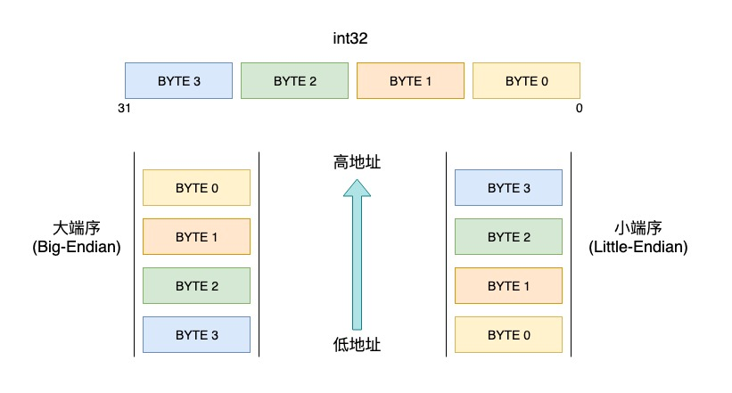
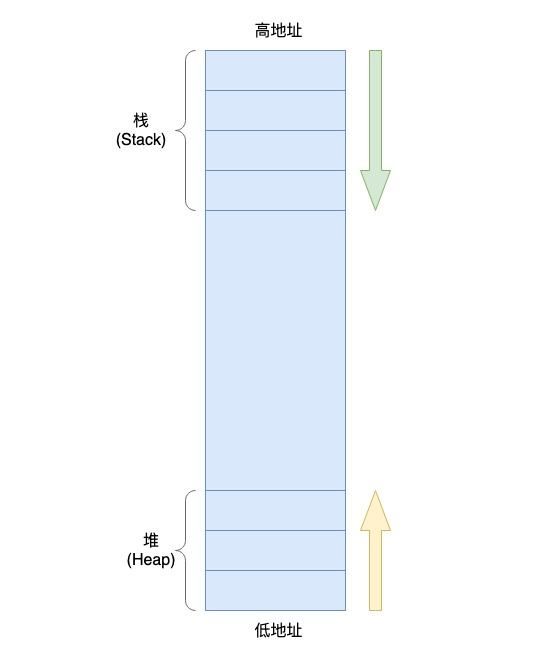
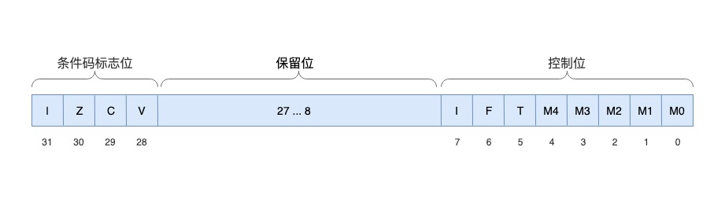
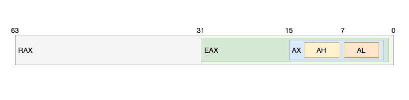

汇编语言简述(逆向工程)
在逆向分析C/C++等编译型语言时，汇编是一项必备的功能，掌握简单汇编知识是十分有必要的。
一些基本概念
汇编语音是面向机器的程序设计语音，使用助记符代替操作CPU指令的机器码，所以汇编语言也称之为符号语言。 不同于C/C++、Java等高级语言，汇编语言操作的对象是CPU、寄存器、内存。 通俗来讲，在汇编语言的里，执行一个指令的一般流程是：
- 将需要操作的内容写入寄存器
- 执行对应的机器指令，让CPU运算结果
- 从寄存器读取结果的值
寄存器
要了解汇编，首先需要知道，什么是寄存器。 寄存器是CPU里的高速缓冲区，学过计算机原理的同学应该都知道，CPU的运算速度是极快的，而内存的读写速度远远跟不上CPU的运算速度的，根据木桶定律，计算机的整体效率受限于内存的读写速度。因此，为了提高效率，人们想到在CPU和内存之间增加一个高速缓存（很多CPU还分一级缓存、二级缓存甚至是三级缓存）。 高速缓存的读写速度比内存快得多，而高速缓存的作用就是预先将内存中需要运算的数据写入高速缓存中，等到CPU可以执行机器指令的时候，就可以直接从速度较快的高速缓存中读取，而不是从读写代价较高的内存中读，从而，提高了计算机的整体运行效率。
因此，在编写汇编代码的时候，需要先将数据写入到寄存器中，CPU才能做进一步的操作，而寄存器又分为：
- 通用寄存器
- 指针和变址寄存器，指针寄存器又分为：基址指针寄存器、堆栈指针寄存器等
- 段寄存器
- 指令指针寄存器（PC）
- 标志寄存器
我们在做逆向分析过程中，关注最多的一般是通用寄存器、堆栈指针寄存器、标志寄存器等，下文会详细说明。
大端小端
做逆向分析的时候，经常需要通过动态分析手段来读取内存中的数据，将内存中的数据对应到代码中的变量上，值得一提的是，内存中数据存储的顺序是需要我们注意的。我们都知道，计算机里存储数据的最小单位是byte，即字节，内存也不例外。我们逆向分析得到的内存数据是以字节为单位的数据。一个字节是8-bit（位），而代码中的基本数据类型有8-bit、16-bit、32-bit、64-bit等等，这些长度大于一个byte的数据类型在内存中是以怎样的顺序进行存储的呢？这就涉及到大小端模式的问题了。
- 大端模式：是指数据的高字节保存在内存的低地址中，而数据的低字节保存在内存的高地址中。
- 小端模式：是指数据的高字节保存在内存的高地址中，而数据的低字节保存在内存的低地址中。
以32位的整形数据为例，字节的排列顺序如下： 
PowerPC架构的CPU中一般是大端模式，x86、arm架构的CPU普遍采用小端模式。
栈和堆
栈和堆是学汇编需要了解的两个概念，栈和堆是汇编使用内存时的两种划分，它们都是内存上的存储数据的空间。
栈：大家都知道，栈是一种数据结构，数据按照先进后出的方式进行存储，汇编里也是如此，但一般只用于保存函数内的局部变量。在调用一个函数的时候，先预留足够数量的栈空间，供函数内部使用，在函数结束时，又需要移动栈指针空间，使之与进入函数前的地址保持一致，即所谓的栈平衡。
堆：堆也是用于存放变量的，但不同于栈但是，栈用于保存申明方式定义的局部变量，而堆用于保存alloc或new方式申请的变量。由于是运行时才使用内存空间，就导致编译器无法知道你需要多大的空间，所以在C/C++里这种方式申请的内存需要自己手动释放。

值得注意的是，堆内存是从低地址往高地址使用内存空间的，而栈是从高地址往低地址使用内存空间。这就是为什么我们经常看到函数的开头会有一句 SUB SP 0x20这种移动SP指针下移的代码，哦！原来是在准备栈空间给函数内部的局部变量使用；而在函数末尾又会ADD SP 0x20去还原栈指针，保持栈平衡。
这里大家可以思考一下，我们写递归函数时，如果遇到死循环抛出异常，为什么叫StackOverflow异常？就是因为死循环调用函数时，会一直移动SP下移，最终栈内存会和堆内存相遇，这时候就是我们遇到的栈内存溢出异常了。
汇编语言的特点
由于汇编是最接近机器代码的程序设计语言，因此有很多特性不同于我们熟悉的高级语言：
- 没有申请、释放内存的概念，对内存操作没有限制，拿到内存地址就读写。不同于C/C++等语言里，局部变量的内存的分配和释放都是编译器在编译的时候完成的。
- 没有函数、方法等概念，高级语言中所有的函数、方法对应到汇编语言中都是一个个代码片段。而在汇编里实现高级语言的函数调用是：
- 保存当前代码地址的下一个指令地址
addr_a - 转跳到代码片段
fun_a的地址addr_b - 代码片段
fun_a执行完后，转跳到地址addr_a
- 保存当前代码地址的下一个指令地址
以上，在自己实战积累后，会有更深入的理解和感悟。
CPU的分类
由上面的描述的内容可知，汇编语言操作的对象是CPU、是硬件，但CPU的架构分多种，常见的架构有 x86、ARM、MIPS等。个人计算机主要以 x86系列架构为主；手机、平板等移动设备则以 ARM系列架构为主，下文将围绕这两种架构来分别描述汇编语言。
ARM汇编
ARM架构又分为32位架构和64位架构，目前市面上的手机基本都是64位的，而64位是向下兼容32位的。大部分应用开发商（特别是Android）在使用C/C++混合编码时，为了兼容旧设备，在编译时都会保留32位的编译选项，所以本文将以32位的ARM为例来分析汇编。
ARM寄存器
| # | 别名 | 用途 |
|---|---|---|
| R0 | - | 通用寄存器 |
| R1 | - | 通用寄存器 |
| R2 | - | 通用寄存器 |
| R3 | - | 通用寄存器 |
| R4 | - | 通用寄存器 |
| R5 | - | 通用寄存器 |
| R6 | - | 通用寄存器 |
| R7 | - | 一般存放系统调用号 |
| R8 | - | 通用寄存器 |
| R9 | - | 通用寄存器 |
| R10 | - | 通用寄存器 |
| R11 | FP | 栈帧指针寄存器 |
| R12 | IP | 程序内部调用寄存器 |
| R13 | SP | 栈指针寄存器 |
| R14 | LR | 程序链接寄存器，一般存放函数的返回地址 |
| R15 | PC | 程序计数寄存器 |
| CPSR | - | 状态寄存器 |
在函数调用中，参数通用寄存器R0 ～ R3传递，超过4个的参数剩余参数，压入栈中，通过栈传参，函数的返回值存入R0寄存器中。
CPSR（Current Program Status Register）：当前程序状态寄存器，用于存放上一次指令执行的状态，按位表示状态，即每一位表示了不同的状态。

- CPSR的低8位称为控制位，程序无法修改（除非CPU处于特权模式）。
NZCV为条件码标志位，它们的值受逻辑运算或算术运算的结果而改变。
| Bits | Flag | Desciption |
|---|---|---|
| [31] | N(Negative) | 指令执行结果为负数时置1 |
| [30] | Z(Zero) | 指令执行结果为0时置1 |
| [29] | C(Carry) | 对于加法有进位则置1，对于减法有借位则置0 |
| [28] | V(Overflow) | 指令结果不能用32位的二进制补码存储，即发生了溢出时置1 |
| [24] | J(Jazelle) | 允许ARM处理器去以硬件执行java字节码的状态标志 |
| [9] | E(Endian) | 小端序置0，大端序置1 |
| [5] | T(Thumb) | 当为Thumb模式时置1，ARM模式置0 |
| [4:0] | M(Mode) | 当前的权限模式（用户态，内核态） |
常见指令
在做逆向分析阅读汇编代码时，我们不需要详细理解每一句汇编代码的作用，很多时候都是跳跃式的阅读，掌握关键的汇编代码逻辑即可。汇编的指令比较多，我们也并不需要全部记住，掌握一些常见的指令就能理解大部分的汇编代码，遇到其他不常用指令实在是需要理解，再去查找手册就行了。
下面列举一些常见的汇编指令：
| Name | Description | Name | Description |
|---|---|---|---|
| MOV | 移动数据 | EOR | 异或运算 |
| ADD | 加法运算 | LDR | 加载数据 |
| SUB | 减法运算 | STR | 存储数据 |
| MUL | 乘法运算 | LDM | 多次加载数据 |
| LSL | 逻辑左移 | STM | 多次存储数据 |
| LSR | 逻辑右移 | PUSH | 数据入栈 |
| ASR | 算术右移 | POP | 数据出栈 |
| ROR | 循环右移 | B | 分支转跳 |
| CMP | 数据比较 | BL | 链接(保存当前地址用于返回)分支转跳 |
| AND | 与运算 | BX | 分支转跳切换(条件切换Thumb模式) |
| ORR | 或运算 | BLX | 链接分支转跳切换 |
实战分析
下面我们来分析一小段简单的汇编代码。
C语言源码
int fun_A(int a, int b) {
int c = a + b;
return c;
}
一个简单的加法函数fun_A，通过IDA反汇编得到对应的汇编代码
var_14 = -0x14
var_10 = -0x10
var_C = -0xC
var_8 = -8
var_4 = -4
; __unwind {
SUB SP, SP, #0x14 ; 申请栈空间，20 byte
MOV R2, R1 ; 参数b
MOV R3, R0 ; 参数a
STR R0, [SP,#0x14+var_4] ; 保存a到栈
STR R1, [SP,#0x14+var_8] ; 保存b到栈
LDR R0, [SP,#0x14+var_4] ; 读取a
LDR R1, [SP,#0x14+var_8] ; 读取b
ADD R0, R1 ; a + b
STR R0, [SP,#0x14+var_C] ; 结果c保存到栈
LDR R0, [SP,#0x14+var_C] ; 读取c
STR R2, [SP,#0x14+var_10] ;
STR R3, [SP,#0x14+var_14] ;
ADD SP, SP, #0x14 ; 还原栈空间
BX LR ; 返回到调用地址
; }
可以看到，一段C代码被编译器汇编之后得到到汇编代码，代码可划分为以下几个部分：
- 申请栈空间
- 保存参数到栈中
- 真正关键的代码逻辑
- 恢复栈空间，保持栈平衡
- 返回
因此我们在看到一段函数代码的时候，开头的申请栈空间、保存参数以及末尾的恢复栈空间、返回的代码可以直接跳过，直接分析中间的逻辑代码。另外可以看到，由编译器编译得到的汇编代码会有很多冗余的部分，毕竟是机器翻译，逆向分析的时候不用太过深究，直接跳过即可。
x86汇编
x86与ARM汇编相比，语法上稍微有些不同，但分析汇编的代码思路都是一致的，这里介绍一下x86汇编的基本要点和硬件上的不同之处。
x86架构也分32位架构和64位架构，目前市面上的个人电脑普遍是64位，向下兼容32位，下面以64位的x86_64为例分析。
x86_64寄存器
16个通用寄存器
| # | 用途 | # | 用途 |
|---|---|---|---|
| RAX | 通常作为函数返回值 | R8 | 通常用作参数5 |
| RBX | 被调用者保护的寄存器，或用作基指针 | R9 | 通常用作参数6 |
| RCX | 通常用作参数4 | R10 | 临时寄存器 |
| RDX | 通常用作参数3 | R11 | 临时寄存器 |
| RSI | 通常用作参数2 | R12 | 临时寄存器 |
| RDI | 通常用作参数1 | R13 | 临时寄存器 |
| RBP | 被调用者保护的寄存器，或用作帧指针 | R14 | 临时寄存器 |
| RSP | 栈指针寄存器，指向栈顶 | R15 | 临时寄存器 |
通用寄存器还经常可以看到只使用32位、16位、高8位、低8位的用法，但仅限于 RAX、RBX、RCX、RDX这几个寄存器。以RAX寄存器为例，对应用法的数据结构如下图所示：

EFLAGS(状态寄存器)
x86及x86_64同样也有自己的状态寄存器，存放当前的程序状态标志。
状态标志位：用于指示算术指令（如ADD、SUB、MUL等）的运算结果
| Bits | Flag | Desciption |
|---|---|---|
| [0] | CF(Carry Flag) | 对于算术运算有进位或借位则置1，反之则置0 |
| [2] | PF(Partiy Flag) | 运算结果最低有效字节包含偶数个1则置1，反之则置0 |
| [4] | AF(Adjust Flag) | |
| [6] | ZF(Zero Flag) | 运算结果为0则置1，反之置0 |
| [7] | SF(Sign Flag) | 运算结果为正则置0，负数置1 |
| [11] | OF(Overflow Flag) | 结果是较大的正数或较小的负数，并且无法匹配目的操作数（即结果溢出）时将该位置1，反之则置0 |
控制标志位：控制串指令(MOVS, CMPS, SCAS, LODS以及STOS)。设置DF标志使得串指令自动递减（从高地址向低地址方向处理字符串），清除该标志则使得串指令自动递增。STD以及CLD指令分别用于设置以及清除DF标志。
| Bits | Flag | Desciption |
|---|---|---|
| [10] | DF(Direction Flag) | 置1时串指令自动递减（从高地址向低地址方向处理字符串），置0时则使得串指令自动递增 |
16个向量寄存器
用于向量运算
| # | 用途 |
|---|---|
| XMM0-XMM1 | 用来传递和返回浮点参数 |
| XMM2-XMM7 | 用来传递浮点参数 |
| XMM8-XMM15 | 临时寄存器 |
常用指令
与ARM汇编类似，这里列举一些常见的指令，用于基本的逆向分析：
| Name | Description | Name | Description |
|---|---|---|---|
| MOV | 移动数据 | INTO | 溢出中断指令 |
| PUSH | 数据入栈 | SHL | 逻辑左移 |
| POP | 数据出栈 | SHR | 逻辑右移 |
| ADD | 加法运算 | SAL | 算术左移 |
| SUB | 减法运算 | SAR | 算术右移 |
| INC | 操作数加1 | ROL | 循环左移 |
| DEC | 操作数减1 | ROR | 循环右移 |
| ADC | 多字节加法，带进位(CF)做加法 | RCL | 带进位循环左移 |
| SBB | 多字节减法，带借位(CF)做减法 | RCR | 带进位循环右移 |
| CMP | 数据比较，只改变标志寄存器 | LEA | 取偏移地址指令 |
| AND | 逻辑与 | JMP | 转移指令 |
| OR | 逻辑或 | JE | 等于则转跳 |
| XOR | 逻辑异或 | JNE | 不等于则转跳 |
| NOT | 逻辑非 | JG | 大于则转跳 |
| TEST | 逻辑与运算类似，但只改变标记寄存器 | JGE | 大于等于则转跳 |
| CALL | 子程序调用指令 | JL | 小于则转跳 |
| RET | 返回指令 | JLE | 小于等于则转跳 |
| INT | 中断指令 |